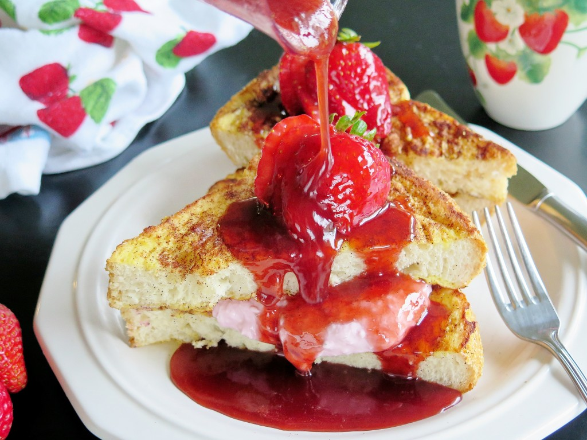

French toast casserole is served with a drizzle of warm homemade strawberry sauce.
Ingredientes:
- 12 slices home-style white bread, cut into 1-inch cubes, divided
- 2 (8 ounce) packages cold cream cheese, cut into 1-inch cubes
- 1 ½ cups sliced fresh strawberries
- 2 cups half-and-half
- 12 large eggs
- ⅓ cup pure maple syrup
Sauce:
- 1 cup white sugar
- 1 cup water
- 2 tablespoons cornstarch
- 1 cup sliced fresh strawberries
- 1 tablespoon butter
Directions:
- Step 1
- Generously grease a 9x13-inch baking dish.
- Step 2
- Arrange half the bread cubes in the prepared baking dish.
- Evenly distribute cream cheese cubes over the bread cube layer; sprinkle 1 1/2 cups sliced strawberries atop cream cheese layer.
- Layer the remaining bread cubes over strawberry layer.
- Step 3
- Pour half-and-half into a blender; pulse for a few seconds.
- Blend eggs into half-and-half until fully incorporated.
- Add maple syrup and blend until smooth.
- Pour mixture evenly over bread mixture.
- Cover the baking dish with aluminum foil and refrigerate 8 hours or overnight.
- Step 4
- Remove baking dish from refrigerator 45 minutes before baking.
- Step 5
- Preheat oven to 350 degrees F (175 degree
- Step 6
- Bake the covered casserole in the preheated oven for 30 minutes.
- Remove aluminum foil and continue baking until French toast is puffed and golden brown, about 30 more minutes.
- Step 7
- Stir sugar, water, and cornstarch together in a small saucepan.
- Cook, stirring occasionally, over medium heat until mixture has thickened, about 5 minutes.
- Mix in 1 cup sliced strawberries; cook and stir until strawberries have softened, about 10 minutes.
- Add butter; stir until melted. Serve hot over French toast.
- Step 8
- Enjoy your meal!!!
Return to top
Return to main page